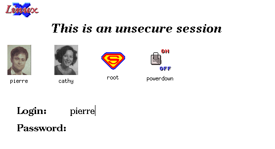
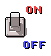

XDM-photo,
un chouette XDM pour LINUX
Article pour l'Echo de Linux (Juillet 1996)
Pierre Ficheux (pierre@rd.lectra.fr)XDM se charge du controle du login/logout des utilisateurs, du test de l'activité du serveur X sur chaque display. Le dialogue entre le démon xdm sur le host et le serveur X utilise un protocole appelé XDMCP (XDM Communication Protocol) développé par NCD (NetworkComputing Devices) leader des constructeurs de terminaux X.
Cependant, XDM peut aussi être utilise sur une station de travail. Au
lieu d'utiliser le programme xinit depuis une rustique session en mode
texte, XDM permet un login directement dans un écran X. le programme
chooser, compilé avec xdm permet également de selectionner la
station sur laquelle vous désirez vous loger.
Configuration de XDM
XDM est livré pré-configuré sur la plupart des distributions
LINUX avec les packages
XFree86. Voici cependant une
description sommaire des fichiers principaux permettant le paramètrage de
XDM. Comme tous les clients X, xdm est complètement configurable
par ressources.
Les fichiers de configuration sont placés sur le répertoire /usr/X11R6/lib/X11/xdm.
:0 local /usr/X11R6/bin/X
xlogin*greeting: CLIENTHOST xlogin*namePrompt: login:\ xlogin*fail: Login incorrect #ifdef COLOR xlogin*greetColor: CadetBlue xlogin*failColor: red *Foreground: black *Background: #fffff0 #else xlogin*Foreground: black xlogin*Background: white #endif
DisplayManager.errorLogFile: /usr/X11R6/lib/X11/xdm/xdm-errors DisplayManager.pidFile: /usr/X11R6/lib/X11/xdm/xdm-pid DisplayManager.keyFile: /usr/X11R6/lib/X11/xdm/xdm-keys DisplayManager.servers: /usr/X11R6/lib/X11/xdm/Xservers DisplayManager.accessFile: /usr/X11R6/lib/X11/xdm/Xaccess DisplayManager._0.authorize: true
twm & exec xterm -geometry 80x24+10+10 -lsLes erreurs de la session utilisateur sont redirigées sur le fichier $HOME/.session-errors. Les erreurs générales du démon sont redirigées sur le fichier xdm-errors cité dans le fichier xdm-config.
Voici un exemple de fichier .xsession
# Configure le clavier français xmodmap /usr/X11R6/lib/X11/Xmodmap.fr # Supprime le controle d'accès xhost + # Affiche la lune en fond d'écran xphoon # Démarre mon window-manager favori fvwm & # Pendule xclock -g 100x100-10+10 & # Charge système xload -g -120+10 & # XTerm principal exec xterm -name Pierre -fn 9x15 -g 80x24+10+10 -lsATTENTION
Le fichier .xsession doit être exécutable. Dans la cas contraire, le login par XDM ne pourra pas fonctionner :(
# xdmCependant, il est recommandé de le lancer à partir d'une fichier de démarrage du système comme par exemple /etc/rc.d/rc.local
... # XDM echo Starting the XDM daemon /usr/X11R6/bin/xdm ...
Une telle amélioration n'est pas réellement difficile à réaliser à partir des sources originaux car XDM utilise la librairie des X Intrinsics (appelée également Xt).
Cette librairie, utilisant une approche objet, définit des classes de bases pour des widgets (en fait des objets graphiques comme des boutons, des conteneurs, des zones de saisie, etc..). La bannière XDM elle-même utilise un widget spécial appelé Login ce qui fait que la partie graphique du programme xdm est complètement indépendante de la partie système.
Il suffit donc de modifier le widget Login pour modifier complètement
l'aspect du programme.

Les fichiers d'images utilisent le format
XPM développé par
Arnaud Le Hors et les membre du projet
Koala pour la société
Bull.
Si un fichier XPM existe, il est affiché dans la bannière au dessus de votre nom, il
suffit donc de double-cliquer sur l'icone pour se loger (si on a un mot de passe, il
faudra tout de même utiliser le clavier pour le saisir...) .
Un exemple d'utilisation de XDM-photo est la création d'un login
d'arrêt de la machine associé à un login. Vous pouvez définir un login powerdown
dans /etc/passwd
Le widget Login modifié
Au lieu de gèrer simplement un login et un mot de passe, le nouveau
widget
construit une liste d'utilisateurs à partir du fichier /etc/passwd (et
également /etc/shadow si l'on utilise les shadow password). Pour
chaque nom d'utilisateur, le widget tente de trouver un fichier d'image
associé au nom sous la forme nom_login.xpm sur le répertoire
/usr/X11R6/lib/X11/xdm/pixmaps.
powerdown::0:0:Shutdown:/powerdown:/bin/sh
Le répertoire /powerdown doi contenir un fichier .profile du type
echo Shutting down `hostname`...
/etc/shutdown -rf now
Vous pouvez d'ores et déja arrêter votre PC en cliquant sur l'icone

Nouvelles ressources
Voici une description des nouvelles ressources ajoutées a celles du widget Login
initial. Toutes ces ressources se affectent la classe Login.
Affichage ou non du logo (LINUX). Le défaut est True
Affichage ou non de la liste des utilisateurs. le défaut est True. si cette
cette ressource est False, la bannière est similaire à celle de la version
originale de XDM.
Utilisation ou non du fichier default.xpm chargé si l'on ne trouve pas de
nom_login.xpm. Le défaut est False
La largeur de la boite neglobante de chaque image et nom de login. Le défaut est 90
pixels.
La hauteur de la boite neglobante de chaque image et nom de login. Le défaut est 90
pixels.
La couleur utilisée pour afficher le nom de login sous l'image. Le défaut est
black.
La fonte utilisée pour afficher le nom de login sous l'image. Le défaut est
6x13.
Le nombre de colonnes de la liste d'utilisateurs affichés. Le défaut est 6.
Le nombre de lignes de la liste affichés. Le défaut est 2. Si le nombre total
d'utilisateurs à afficher est supérieur à nbLines * nbColumns, une barre de
défilement (ascenceur) est affiché. Cependant, l'utilisation d'un ascenceur est pénible
pour un grand nombre d'utilisateur et il convient donc de limiter les fichiers
nom_login.xpm à quelques "happy few" :-). Dans le cas d'une station de travail
personnelle, le problème ne se pose pas.
Comment créer des pixmaps XPM
Les fichier nom_login.xpm peuvent être crées en utilisant l'éditeur
pixmap
(écrit par Lionel
Mallet). Cet éditeur à une interface
similaire à celle de l'éditeur de bitmap X bitmap. Cependant, la création d'un
beau pixmap est une tâche ardue (surtout pour moi !) et il est beacoup plus facile de
modifier une image existante (digitalisée à partir d'une photo réelle) ou bien de
télécharger une icone de l'Internet. Une grande collection d'icones est disponible en
particulier sur :
server.berkeley.edu:/pub/AIcons
Si vous devez manipuler des images, vous pouvez utiliser le package Netpbm (anciennement PBM+) qui contient des convertisseurs de format XPM (xpmtoppm et ppmtoxpm). Une conversion typique d'un fichier GIF en XPM avec réduction à 8 couleurs sera:
giftoppm file.gif | ppmquant -8 | ppmtoxpm > file.xpmSi vous disposez d'un display avec seulement 256 couleurs, il est trèe important de réduire drastiquement le nombre de couleurs de chque icone afin de ne pas saturer la table des couleurs.
Vous pouvez également utiliser xv-3.01, un superbe shareware écrit par John Bradley qui permet la manipulation et la conversions entre divers formats d'images dont le XPM.
Une taille correcte pour un moniteur classique (15 ou 17") peut être par exemple une
icone de 40x60 pixels.
Comment compiler XDM-photo
XDM-photo est largement basé sur la distribution source de XDM. La
compilation se résume à
xmkmf
make Makefiles
make depend
make
make install
make install.man
J'utilise XDM-photo principalement sur LINUX avec
XFree86-3.1.2 mais également sur les architectures suivantes:
Archives téléchargeables
Vous pouvez télécharger les produits suivants cités dans cet article: